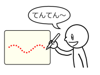

 I developed a prototype painting system called Onomatopen, which enables the user to switch brushes and apply effects using onomatopoeia. For example, if the user draws a line while saying "Zig-zag Zig-zag...", a jagged line is drawn.
I have currently implemented 10 features using onomatopoeia.
There are two main uses of onomatopoeia; switching brushes and editing images.
| Brush | Edit/Effect |
|---|---|
|
|
|
The voice recognition part uses Julius, which is an open-source voice recognition engine. The Onomatopen system adopts a customized grammer for recognizing repeated onomatopoeia.
By applying the techniques of the Onomatopen to video game, I developed a game named "Ninja Onomato-kun".
For Windows only
For Windows and Linux
Source code (github.com)